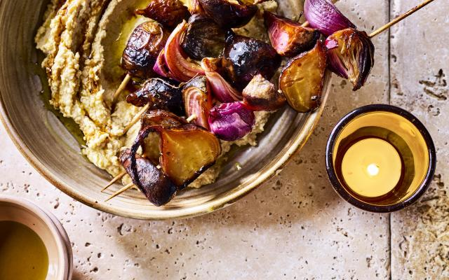

Pittige gelakte rodebietsatés met hummus

INGREDIENTEN VOOR4 PERSONEN
- rode bieten 700g
- rode ui (grote) 1
- tijm 4 takjes
- balsamicoazijn 50ml
- olijfolie 2 el
- peper en zout
Voor de hummus
- kikkererwten (blik) 400g
- citroen 1
- knoflook 1 teentje
- tahin 1 el
- olijfolie 4 el
- peper en zout
BEREIDING
- Verwarm de oven voor op 185 °C. Schil de rode bietjes. Wikkel ze in aluminiumfolie en zet ze 1 uur, of tot
ze zacht zijn, in de oven. Laat ze even afkoelen en snij ze in blokjes van 4 cm.
- Pel de rode ui en snij hem in partjes. Meng de rode biet en ui met de balsamicoazijn, de tijmblaadjes,
peper, zout en een scheutje olijfolie. Rijg ze op spiesjes en bak ze op een laag vuur gaar en goudbruin. Je
kan ze in de pan bakken of op een bakplaat in de oven.
- Maak intussen de hummus. Pel en plet de knoflook. Laat de kikkererwten uitlekken maar bewaar 2 eetlepels
vocht. Mix de kikkererwten met het vocht, de knoflook, 2 eetlepels citroensap, de tahini, olijfolie en een
scheutje water tot een zachte puree. Kruid bij met peper en zout. Serveer de spiesjes met de hummus.